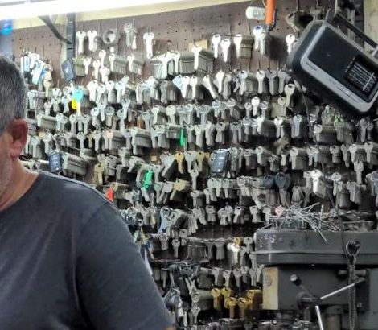
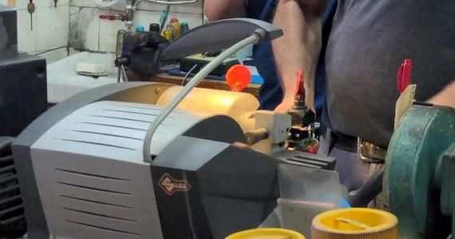
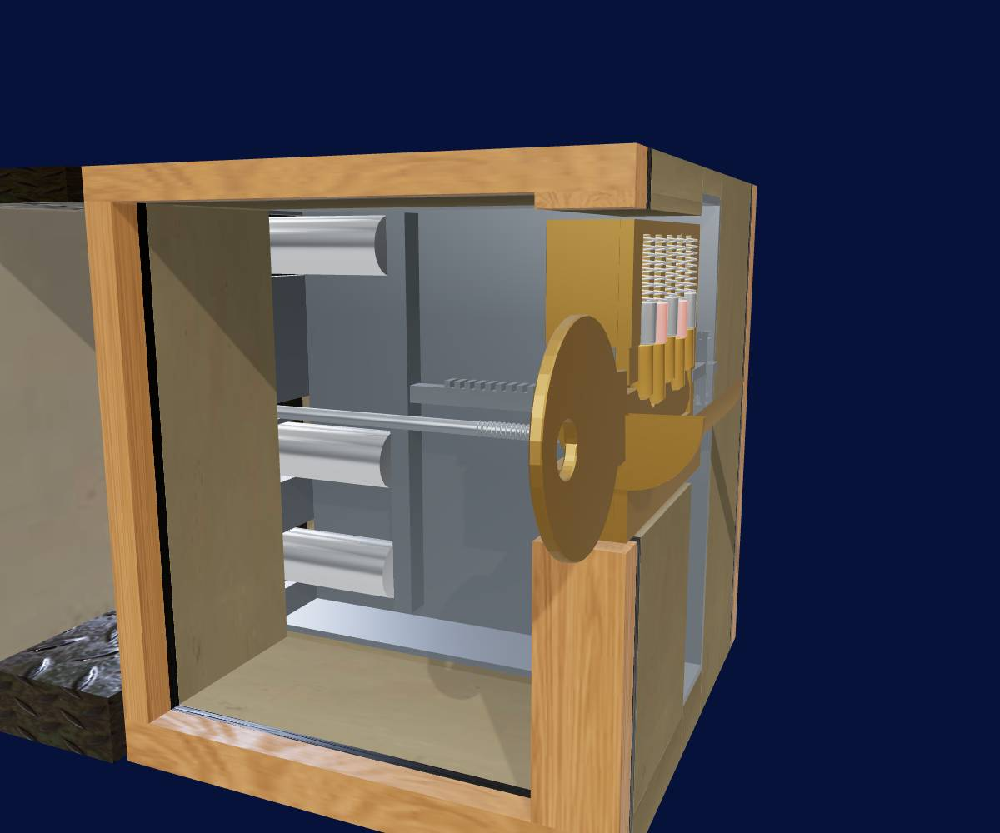
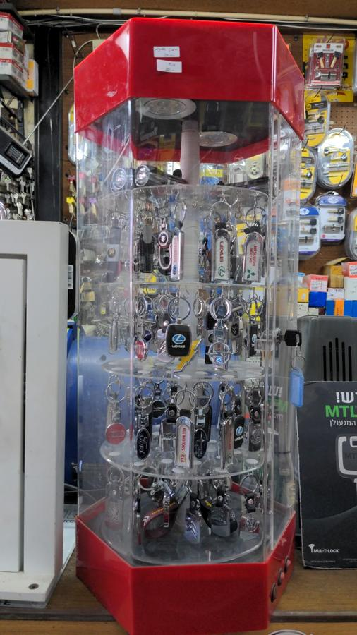
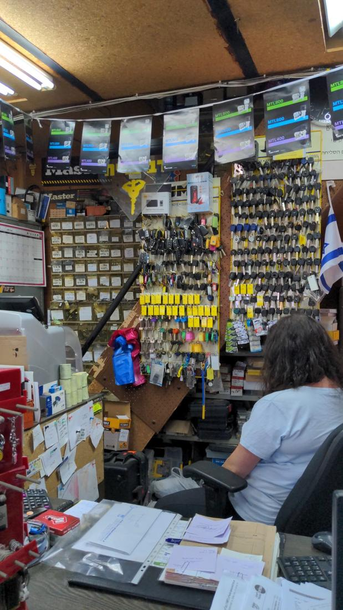
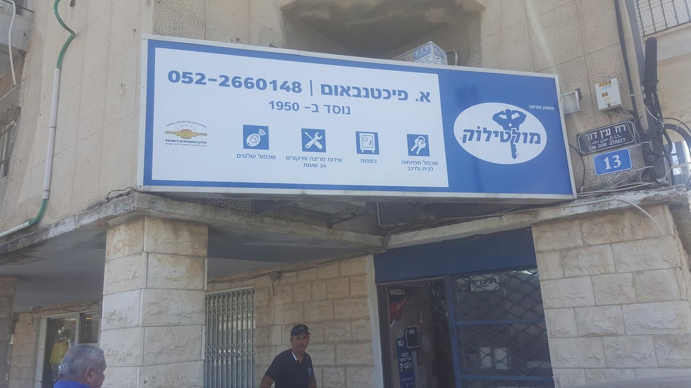

על הקירות בחנות תלויים מאות מפתחות ריקים, ליד מכונת השכפול, ולצדם מפתחות לרכב, שלטים ומנעולים. The shop’s walls hold hundreds of key blanks beside the cutting machine, with car keys, remotes and locks.
ככה משכפלים מפתחHow a key is copied
-

בוחרים גלםPick the blank
מאות גלמים תלויים על הקיר. לוקחים את זה שהפרופיל שלו מתאים לחריץ של המפתח המקורי.Hundreds of blanks hang on the wall. The one whose profile fits the original’s keyway comes down.
-

מהדקים ליד המקורClamp it by the original
המקור והגלם ננעלים זה ליד זה בשני המלחציים של המכונה, צמודים לאותה כתף.The original and the blank lock side by side in the machine’s two vises, against the same shoulder.
-
חותכים, מברישים, מנסיםCut, brush, try it
מחט ההעתקה עוברת על השיניים של המקור, והסכין המסתובבת חותכת את אותן שיניים בגלם. מברשת מסירה את הגרדים, ומנסים את המפתח במנעול. הווידאו להמחשה, לא צולם בחנות.A tracer runs along the original’s cuts while the spinning cutter copies them into the blank. A wire brush takes off the burrs, and the key is tried in the lock. The video is illustrative, not filmed in the shop.
למה מפתח שחוק לא מסתובבWhy a worn key won’t turn
בתוך הצילינדר יש חמישה זוגות של פינים. הגליל מסתובב רק כשכל זוג נעצר בדיוק על קו הגזירה, ומפתח שנשחק משאיר אותם נמוך מדי. גללו, או הקישו על אחת השיניים של המפתח.עברו בין השלבים בשיניים של המפתח או בחצים.Inside the cylinder are five pairs of pins. The plug turns only when every pair stops exactly on the shear line, and a worn key leaves them too low. Scroll, or tap one of the key’s cuts.Step through with the key’s cuts or the arrows.

המחשה תלת-ממדית; כל דלת שונה3D illustration; every door differs
-
המפתח נכנסIn goes the key
בזמן שהמפתח נכנס, השיניים שלו מרימות ומורידות כל זוג פינים, כמו מדרגות.As the key slides in, its cuts lift and drop each pair of pins like steps.
חמשת הפינים זזיםAll five pins moving
-
הגליל לא זזThe plug won’t move
שתי שיניים נשחקו עמוק מדי. הפינים שלהן יושבים נמוך, הפין העליון נשאר חצי בתוך הגליל, והגליל רק נוקש בו.Two cuts have worn too deep. Their pins sit low, the driver pin stays half inside the plug, and the plug only knocks against it.
3 מתוך 5 על הקו3 of 5 on the line
-
איפה השחיקהWhere the wear is
ליד מפתח שנחתך לעומק הנכון רואים מה חסר: האדום הוא המתכת שנשחקה בשתי שיניים.Next to a key cut to the right depths you can see what is missing: the red is metal worn away at two cuts.
2 שיניים שחוקות2 worn cuts
-
מפתח חדש נכנסA new key goes in
כל פין עולה על השן שלו, אחד אחרי השני, עד שהמפתח נעצר בכתף.Each pin rides up its own cut, one after another, until the key stops at its shoulder.
הפינים עוליםThe pins rise
-
כולם על קו הגזירהAll on the shear line
עכשיו חמשת הרווחים בין הפינים נמצאים בדיוק על הקו, ושום דבר לא מחזיק את הגליל.Now all five gaps between the pins lie exactly on the line, and nothing holds the plug.
5 מתוך 5 על הקו5 of 5 on the line
-
הגליל מסתובבThe plug turns
המפתח מסובב את הגליל, הזנב שלו מסובב את גלגל השיניים, והמסילה דוחפת שלושה בריחים לתוך המשקוף.The key turns the plug, its cam turns the gear, and the rack pushes three bolts into the frame.
3 בריחים נעולים3 bolts thrown
מה עושים בחנותWhat the shop does
כל שורה כאן כתובה על השלט מעל החנות, או בביקורת של לקוח בגוגל.Every line here is written on the sign over the shop, or in a customer’s Google review.
מפתחותKeys4
- שכפול מפתחות לביתHouse keys copied
מהשלט. ״שכפול כל סוגי המפתחות״, כתב סולו ליבוביץ.From the sign. “Every kind of key,” wrote Solo Leibovitz.
- מפתחות לרכבCar keys
מהשלט: ״שכפול מפתחות לבית ולרכב״.From the sign: “keys copied for home and car”.
- שכפול שלטיםRemotes copied
מהשלט.From the sign.
- תיקון מפתח לרכבCar key repairs
תיקון והחלפת סוללה, מביקורת של דוד וינברג.A repair and a new battery, from David Weinberg’s review.
מנעולים ודלתותLocks and doors4
- צילינדרים ומנעוליםCylinders and locks
על השלט: ״משווק מורשה מולטילוק״.On the sign: “authorised Mul-T-Lock dealer”.
- פריצה ותיקוניםLockouts and repairs
על השלט: ״שירות פריצה ותיקונים 24 שעות״.On the sign: “lockout and repair service, 24 hours”.
- מנגנון לפלדלתSteel-door mechanisms
החלפת מנגנון בפלדלת עם ציפוי עץ, מביקורת של ניב שר.A mechanism replaced in a wood-clad steel door, from Niv Sher’s review.
- כספותSafes
מהשלט.From the sign.

מפתחות ושלטים לרכבCar keys and remotes
שכפול מפתח לרכב, כך כתוב על השלט מעל החנות. הביאו את המפתח שיש לכם, והגלם נבחר לפי הדגם.Car keys copied, as the sign over the shop says. Bring the key you have, and the blank is chosen to match it.
שכפול שלטים, גם הוא על השלט. על הקיר מאחורי הדלפק תלויים שלטים ומפתחות לרכב מכל הסוגים.Remotes copied, also on the sign. Car keys and remotes of every kind hang on the wall behind the counter.
מפתח לרכב שהפסיק לעבוד לא תמיד צריך להחליף. לפעמים מספיק לתקן אותו ולהחליף סוללה, ולשמור על המעטפת.A car key that stopped working doesn’t always need replacing. Sometimes a repair and a new battery are enough, and the shell stays.
ביקורות בגוגלGoogle reviews

״יגאל החליף מנגנון של פלדלת עם ציפוי עץ שלא אפשר גישה לבריחים. עבודה מקצועית נקיה למרות הקושי.״“Yigal replaced the mechanism of a wood-clad steel door that gave no access to the bolts. Clean, professional work despite the difficulty.”

4.7 בגוגל, מ-188 ביקורותon Google, from 188 reviews
״שרות מקצועי. שכפול מפתח במהירות. שכפול כל סוגי המפתחות. המחיר סביר. מקבלים כרטיסי אשראי.״“Professional service. Keys copied quickly. Every kind of key. Fair price. They take credit cards.”
״שירות מעולה. מקצוענים. מחירים טובים. תיקן לי מפתח לרכב ועבד שלא אצטרך לשלם על פלסטיק חדש. בסוף גבה רק על הבטריה. מומלץ בחום.״“Excellent service. Professionals. Good prices. He fixed my car key and worked it so I wouldn’t have to pay for a new shell. In the end he only charged for the battery. Highly recommended.”
כל הביקורות בגוגלAll reviews on Google״הגיע בחור מקסים, נעים, אדיב שסידר את הדלת רב בריח ולא השאיר שום לכלוך, החזיר הכל למקום ליד הדלת וסיים מהר.״“A lovely, pleasant, polite man came, fixed the multi-bolt door and left no mess, put everything back by the door and finished quickly.”
מעטפה לדלפקAn envelope for the counter
כמו מעטפת המפתחות שממלאים בדלפק: סמנו מה צריך, וההודעה לוואטסאפ נכתבת לבד. אתם רק שולחים.Like the key envelope you fill in at the counter: tick what you need and the WhatsApp message writes itself. You just send it.
עין דור 13, חיפה13 Ein Dor St, Haifa
- טלפוןPhone
- 073-784-1540
- וואטסאפWhatsApp
- 052-2660148